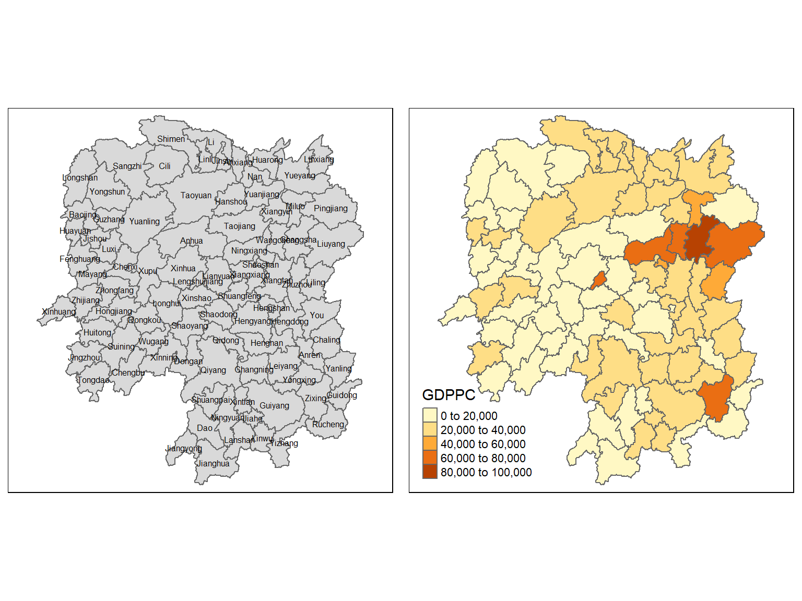
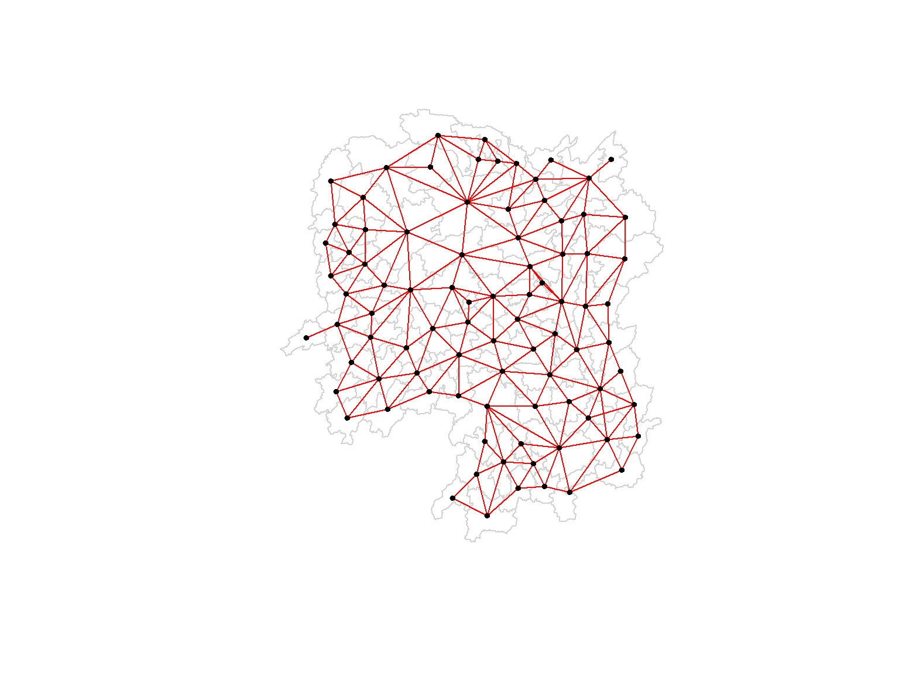

pacman::p_load(sf, spdep, tmap, tidyverse, knitr, GWmodel)hunan <- st_read(dsn = "../../data/geospatial",
layer = "Hunan")Reading layer `Hunan' from data source `C:\wanshen123\IS415-GAA\data\geospatial' using driver `ESRI Shapefile'
Simple feature collection with 88 features and 7 fields
Geometry type: POLYGON
Dimension: XY
Bounding box: xmin: 108.7831 ymin: 24.6342 xmax: 114.2544 ymax: 30.12812
Geodetic CRS: WGS 84hunan2012 <- read_csv("../../data/aspatial/Hunan_2012.csv")hunan <- left_join(hunan,hunan2012)%>%
select(1:4, 7, 15)basemap <- tm_shape(hunan) +
tm_polygons() +
tm_text("NAME_3", size=0.5)
gdppc <- qtm(hunan, "GDPPC")
tmap_arrange(basemap, gdppc, asp=1, ncol=2)
wm_q <- poly2nb(hunan, queen=TRUE)
summary(wm_q)Neighbour list object:
Number of regions: 88
Number of nonzero links: 448
Percentage nonzero weights: 5.785124
Average number of links: 5.090909
Link number distribution:
1 2 3 4 5 6 7 8 9 11
2 2 12 16 24 14 11 4 2 1
2 least connected regions:
30 65 with 1 link
1 most connected region:
85 with 11 linkslongitude <- map_dbl(hunan$geometry,~st_centroid(.x)[[1]])latitude <- map_dbl(hunan$geometry,~st_centroid(.x)[[2]])coords <- cbind(longitude, latitude)k1 <- knn2nb(knearneigh(coords))k1dists <- unlist(nbdists(k1, coords, longlat = TRUE))plot(hunan$geometry, border="lightgrey")
plot(wm_q, coords, pch=19, cex=0.6, add=TRUE, col="red")
Working with Geographically Weighted Summary Statistics (GWSS)
hunan_sp <- hunan %>%
as_Spatial()#Adaptive = True, bw = 6 Neighbors. Adaptive = False, bw = 62 KM.
gwstat <- gwss(data = hunan_sp,
vars = "GDPPC",
bw = 6,
kernel = "bisquare",
adaptive = TRUE,
longlat = T)